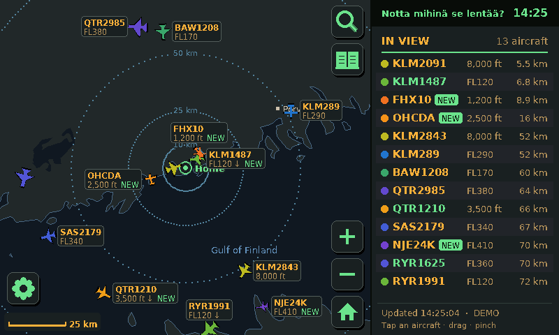
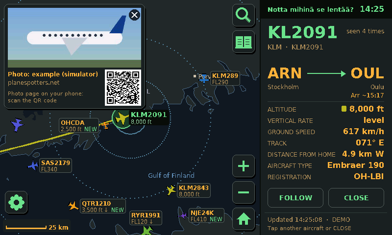
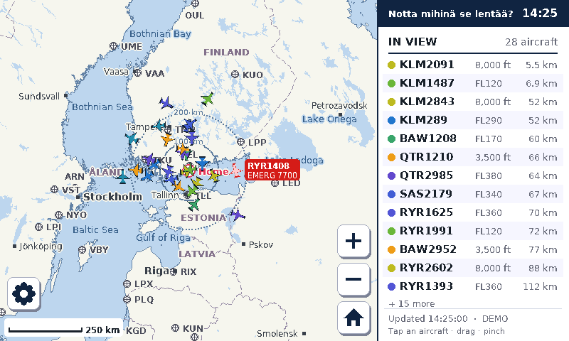
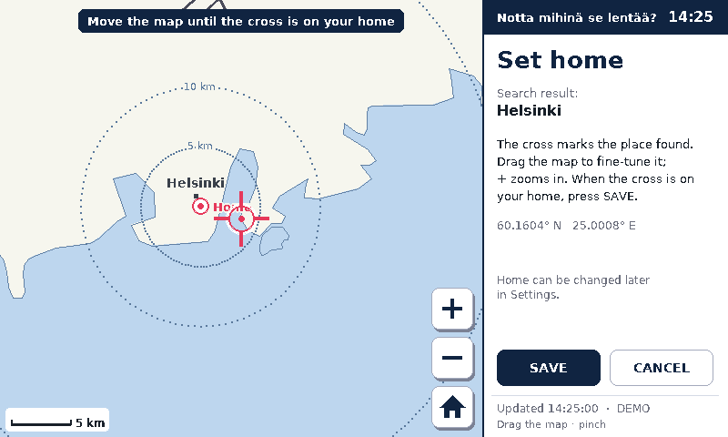
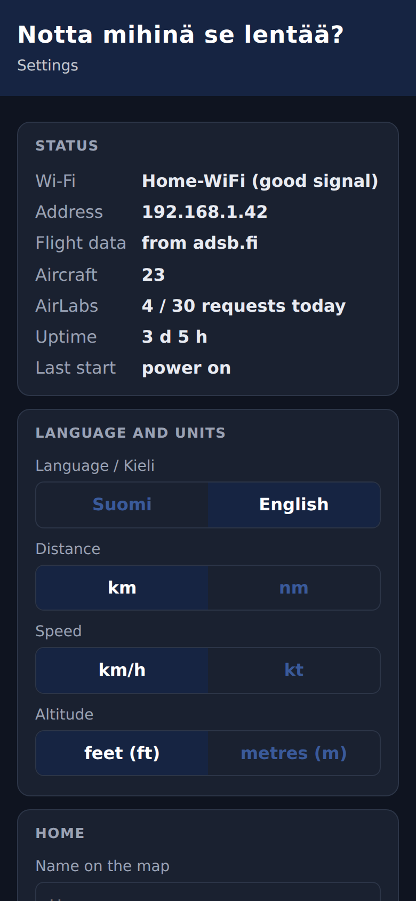
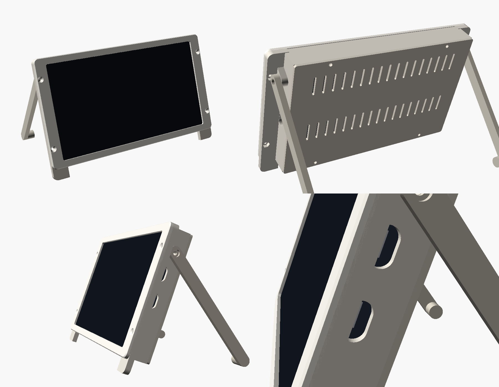

What it does
It uses the Waveshare ESP32-S3-Touch-LCD-7 and free community flight data. The screen is in English, and can be switched to Finnish.

The map
Positions update every four seconds, and the planes keep moving smoothly in between. The map has coastlines, lakes, towns, airports and runways, and you can drag and pinch from a single airport out to the whole world.

Tap a plane
You get the route, an arrival estimate, altitude, climb rate, speed, heading, distance and aircraft type, and the map draws the path it has flown since take-off.
The photo comes from Planespotters.net, with the photographer's name and a QR code that opens the photo page on your phone.

English or Finnish
The whole interface and the map labels switch between the two, number formats included. Units are up to you too: km or nautical miles, km/h or knots, feet or metres.

Setting home
On first start it asks where home is. Type an address, pick the result (it uses OpenStreetMap's search), then drag the map until the cross is on your house.

Settings from your phone
Wi-Fi is set up on the touchscreen. Everything else can also be changed from a small web page on the device: home, night hours, photos, language and units, and an optional AirLabs key for timetable data. Its address and a QR code are in the device's settings.
It's meant to run for months without attention: it reconnects after power and router cuts, restarts itself if something hangs, and turns the screen off at night.
Building one
No soldering. You need the board (touch version), a USB-C cable and a 5 V phone charger.
- Install the Arduino IDE 2 with the ESP32 board package 3.x and the libraries Adafruit GFX, ArduinoJson and JPEGDEC.
- Open
SkyTracker/SkyTracker.ino, set the board options from the guide (16 MB flash, OPI PSRAM, custom partitions) and upload. - Pick your Wi-Fi and home on the screen.
Case

A printable case that closes the board in completely, with two fold-out legs that lean the screen back 20°. The USB-C ports are reached from the side.
It's a parametric OpenSCAD model and prints without supports. Measure your board first; the print guide says what to check.